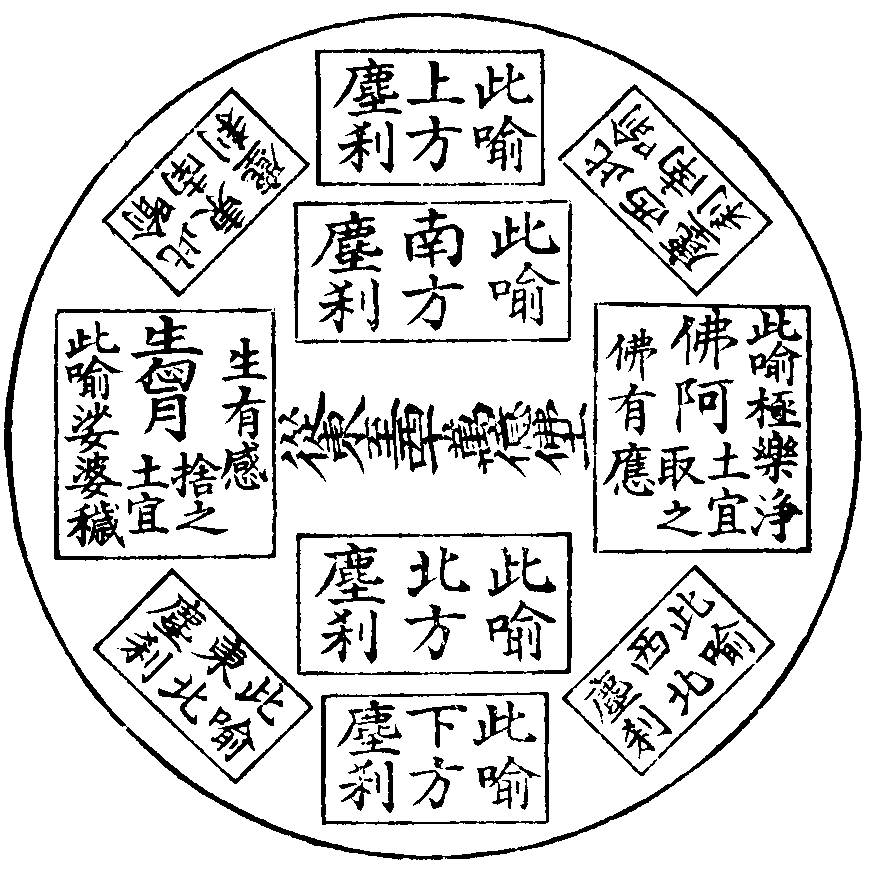

卍新纂大日本續藏經 第62冊
No.1196 淨土證心集 (3卷)
【清 卍蓮述】
第 1 卷
夫所謂土者。心而已矣。心外無土。土外無心。淨名所謂心淨則土淨也。倘以肉團為心。緣影為心。既未證心之所以為心。又安識土之所以為土。則夫應觀法界。一切惟心。心佛眾生。三無差別者。果何所謂也。而迷心作境者。昧然罔覺。一心之趨向。遂成兩土之分歧。有穢淨。斯有苦樂。有苦樂。斯有生佛。一切之國土。想網之所成也。濁惡眾生。既不能信。復何能證。誰則背塵向覺。起厭生欣。當今之世。而欲求一超生死之捷徑。脫輪迴之方便。舍此淨土一門。其何從而有之。台宗卍蓮法師。深究宗門。廣稽教部。不以宗教為究竟。而以淨土為指歸。其亦悟徹根源。契理亦復契機。故發為詩歌。作為銘詞。無不闡揚淨土。大放厥辭。二十九章之雜綴。所以辯明淨土也。四十八首之題像。所以宏讚淨土也。唯心之頌百八。所以徧窮淨土。也要約之律二十。所以勸修淨土也。而且欣厭有銘。警策有偈。無非反復叮嚀。欲人之同歸於淨土也。夫菩薩之用心。利他更切於自利。恐淨土之不知所修也。爰輯儀式以示之。恐淨土之有外乎禪也。復擬牛頌以通之。法師之於淨土。固已深信。而證之於其心矣。余與法師交契有年。深知巔末。十八猶負薪。二十始薙染。未當學問。而能言之亹亹者。不亦難乎其難哉。因弁數語於簡端。以明法師之專心淨土。絕不以宗教接人。正是善宗者不言宗。善教者不言教也。後之學者。當知無宗之非教。無教之非宗。無宗教之非淨土也。幸勿岐而二之。是為序。
夫大道自如。萬行之本。本元若二。吾教何歸。倘萬行同一真。奚自得分迷悟。由一真具萬行。故此有判升沉。人心自異。道本常然。一念未生。千途安有。故諸聖達此道。則生死虗寂。眾生昧此道。則輪迴宛然。以致大覺尊慈。不能自已。示生垂迹。為實施權。四辯宣揚。鑒機宜而與法。一音圓演。指空有以利生。佛應雖殊。理終無別。觀此萬敷之玅用。總為一性之相關。詳夫理事雙融。旨明毫端之上。善惡兩念。果招萬難之中。塞滿太虗盡無餘。填作法界無不徧。若達一心體用相即。便知萬法大小無生。其實返本歸源。隨緣不變也。是以無量法門之多。任他竪窮橫徧。一乘覺場之大。祇須意會神通。古所謂。心包太虗。量周沙界者。明矣。夫凡聖一體。感應靡差。不礙卷舒。不爭遠近。不隔事理。不妨去來。故知從東至西。十萬億土。無論上中下根。皆可往生見佛。祇緣兩土苦樂有異。淨穢不同。所以彼此欣厭。不可不肫切也。佛祖誠言。六方同讚。吾人果信願持名。未有不親證親到者。論位雖有高低。到彼俱無生死。可謂釋迦一代時教。彌陀六字洪名。旨無不該。機無不被者矣。然一生上聖。尚迷隔羅之光。五濁下凡。焉窮徹底之本。但不忍遺教。乃以露鄙懷。略展數言。聊申淺見。故迦葉菩薩云。從未登地已還。皆名邪見之人。此之謂也。非假如來之方便。曷到寶所之玄門。奈何眾生機由利鈍不同。如來法乃難易仍爾。所以非仗言說。何以決疑。非引證明。何以起信。述成佛祖之言教。同證自他之偏圓。願法界眾生。報惟心九品。三空頓證。親見十劫之彌陀。無量分身。並圓二嚴之福果。塵劫有盡。心願無窮云爾。
淨土證心集目錄(終)
No. 1196
淨土證心集卷上
淨土緣起
佛之本懷者何。拔人之苦。與人之樂也。雖云法性平等。無非勸人去其邪。以歸於正也。通論之。則無量法門。門門皆然也。若別論之。於中特開橫超一門。更具拔苦與樂之德。最上殊勝之所不同也。是以如來說法。始自華嚴。終至法華。一代時教。則有三百餘會。而經經無不導歸於極樂。良繇是也。厥後佛法時至。妙教流行。自西而東。傳於震旦。晉代廬山。遠公法師。緣於佛陀跋陀羅尊者。授念佛三昧。與弟慧持僧慧永。朝賢貴士。隱逸清信。乃至闕公則等。一百二十三人。社結東林。刻木銘誓。稱名期生。俱超樂國。闕公則。願生而來報。其後同誓友人。夜在東京白馬寺。為公則追忌轉經。於時林殿。皆作金色。聞空中有聲曰。我闕公則也。祈生極樂。今果矣。故來相報。言訖不見。淨土因茲傳傳不已。名播天下。則蓮風愈久愈扇。誠感則應。靈瑞昭彰不一。至清梵天等而往生者。誰測其數也。設非法門之至圓至頓。焉得如是乎。以法門頓故。法界藏身。太虗無外。又圓故。無論其根之利鈍。信願不虧。稱名即生。故文殊般若經云。眾生愚鈍。觀不能解。但令念聲相續。自往生佛國。縱報末品。終無退轉。所以往生乃三祇之初步。十號之元堦。故知其中多有一生補處者。
一心兩土應宜取捨
聞夫人生有所苦痛者。以未得生法二空。凡有懼者皆然也。究其所由。皆自無始。真不守性。逐成妄所。不返一真之故也。明此理者。外境自心本來不二。故大覺聖人。視人猶己。興慈運悲。長時救護矣。眾生昧此理。反將自心言是外境。便打成兩橛。由是迷心作境。因境生心。造業不已。古德云。假使百千劫。所作業不亡。因緣會遇時。果報還自受。苦哉自作自受。何與於人哉。即至厭離心生。欲求出離。縱使大悟如悟達一般。業報時至。約理雖悟苦痛是虗。言事則其苦狀。終難得免。祇與麼難忍。應知亦然。所以悟達且爾。吾人現前。雖疾病未至。豈敢高談闊論。生死即涅槃乎。細細詳之。甚可懼矣。幸有如來不悋慈悲。無問自說。淨土法門。謂若有聞者。應當發願。生彼國土。又云彼土何故。名為極樂。其國眾生。無有眾苦。但受諸樂。故名極樂。以是觀之。則彼此苦樂。盡可見矣。蓋雖自一心。不可不有取捨也。不可不捨苦取樂也。
簡易不可思議
觀經云。是心作佛。是心是佛。良以吾人但具心是佛未作。故名眾生。如來能證心是佛已作。故號彌陀。所以彌陀。證無所證。全證眾生之所具。眾生具無所具。全具彌陀之所證。是故人念佛。即佛也。如臣傳旨。即王也。眾生心佛名殊。不思議體一。故般若經云。文殊問佛。云何速得阿耨菩提。佛答有一行三昧。欲入一行三昧者。應須於空閒處。捨諸亂意。不取相貌。繫念一佛。專稱名字。隨佛方所。端身正向。能於一佛。念念相續。即是念中。能見過去未來現在諸佛。晝夜常說。智慧辯才。終不斷絕。觀此誰敢輕念佛。乃愚夫愚婦之所為也。何者。蓋即是念中。便能見於三世一切三寶。所有依報國土。尚在其中。更有何物。是心外哉。祇如問答中。速得即是。而四字。直指念佛。是第一則公案。所以十世古今。始終不離於當念。無邊剎海。自他不隔於毫端。蓋謂念佛也。豈可思議哉。故涅槃云。聲聞天眼為肉眼。學大乘在肉眼為佛眼。故修念佛法門。如同大海中人乘船。四望一統是水。則不必更尋陸地鑿源矣。蓋祇貴一心求生便是。珍重珍重。
心土不二智者同往
問誌公云。智者知心是佛。愚人樂往西方。奚得是同。答豈不知永明禪師云。古德設有邊辟之言。皆是為物遣執。則不可獨依其言。不依其義也。此正破人常見之所著。不達自心之邊底。即一向外求。若達即外是內之旨。則一統坦然。誌公決無此語。然他云。智者知心是佛。以心無外故。天然之然。原無造作。則十方佛土在其中矣。所以心包太虗。量周沙界。地獄尚起妙覺之心。何獨西方彌陀佛國。不是心乎。既樂土即是吾心。吾知彼之土。即知自心。吾念彼之佛。即念自心。土即自心之土。心即自土之心。心土不二。生佛一致。毫釐不差也。如是則念佛求生。何愚之有。觀佛三昧經云。文殊自敘宿因。謂得念佛三昧。當生淨土。世尊復記之曰。汝當往生極樂世界。故文殊發願經偈曰。願我命終時。盡除諸障礙。面見彌陀佛。往生安樂剎。生彼佛國已。滿足我大願。阿彌陀如來。現前授我記。夫文殊大乘中之大智。尚且同往。則馬鳴龍樹。及此天衣懷圓照本等。不待言矣。何乃知心是佛者。便不求生乎。智者知心是佛。尚要求生。則愚者求生。理應然也。
惟心異同
孟子曰。言近而指遠者。善言也。守約而施博者。善道也。何況如來出世之道。仰之彌高。鑽之彌堅。一切眾生之所不測。蓋大道心體。惟佛獨證。圓明洞徹。毫無滯礙。故三智一心中知。五眼一眼中見。十方三世。所有一切諸佛淨土。皆自心之本具。故言惟也。俱舍頌云。四大洲日月。須盧六欲天。梵世各一千。名一小千世。此小千千倍。說名為中千。此千倍大千。皆同一成壞是也。一大千世界。稱一佛土者。百億日月。百億須彌。百億四大海。百億鐵圍山。名一佛土廣大若此。則佛佛國土。例爾可見。從是西過十萬億佛土。乃彌陀佛國。如此觀之。彼土此去甚遠。儼然有寶樹寶池。欄楯羅網。四色蓮花。海會聖眾在。亦非譬喻比量約法等。乃實境之事也。不是他物。又不向外來。皆是吾心廣大。故包如許佛土。然亦不獨吾爾。則諸佛國土唯蟻心包含亦可。何以故。蓋蟻身雖微。心大亦然。若了此者。決定無疑。毫無所滯。方可名唯心淨土也。如其不然。則一切佛土。皆在心外。說之於口則同。見之於心則異。而不可名唯心也。蓋論同。則心包太虗。如廬山永明楚石等輩。見佛求生西方者。言唯心為之同也。論異則太虗包心。言淨土便在目前。彌陀不在西方者。彼惟心為之異也。由之瑟奚為於某之門。孔子之言何謂也。故玄沙云。學道之人不識真。祇為從前認識神。無量劫來生死本。癡人喚作本來人。楞嚴經云。落魔道者。都指現前為佛國。別無淨居。及金色相好等。觀佛祖語句。如鑑明鏡。則好醜顯然可見。
心佛一致諦觀無外
問心本無相。安有處所耶。答若無處所。安對汝說。問如何是心。答六字洪名。問如是則念心非念佛耶。答心佛一如。問趙州云。念佛一聲。潄口三日。何乃一如乎。答大抵祖師接物不定。有時恁麼。有時不恁麼。秘藏指南云。僧問趙州。如何是毗盧師法身。州云。阿彌陀佛。阿彌陀佛。有此誠言。趙州何嘗不念佛也。是以妙悟之士。理事雙運。如鳥兩翼。似車兩輪。缺一不可。汝但知此。未曾知彼。便坐潄口一見。當知正念佛時。而當念究其能念之心。徧一切處。了不可得。是名謂之念而無念。即空觀觀心念佛也。將此能念之心。念彼所念之佛號。乃歷歷而分明。是名謂之無念而念。即假觀觀佛念心也。如是則念念了達能念之心。與彼所念之佛。乃非空非有。二邊叵得。即自即他。中道亦亡。即寂而照。自心觀作佛。即照而寂。彼佛顯自心。全心是佛。全佛是心。眾生心佛。一念圓成。如[、/(、*、)]字三點。縱橫並別。皆不可議。舉一即三。言三即一。所以妙宗圓中。疏鈔十要等書。一一無非宗旨。汝自置之不看。倘細詳之。必然合之兩美。故料簡云。有禪有淨土。猶如戴角虎。大集經賢護品云。求無上菩提。應修念佛禪三昧。若人稱念彌陀佛。號曰無上深妙禪。至心想像見佛時。即是不生不滅法。慈旨親傳。可不信哉。
念佛名為無上深妙禪
禪有淺深之所不同。非是一定。古人云。山不在高。有仙則名。水不在深。有龍則靈。吾言佛門入道之要。法不在奇。理契則妙。故金剛三昧經云。不動不禪。離生禪想。法句經云。若學諸三昧。是動非是禪。心隨境界流。云何名為。定聞夫今人之禪所好者。無非坐乎偏空癡定之見。制之於心。使念不起。以為奇特。若爾。一違此二經妙旨。二便不知念佛法門。乃當念即空。念而無念。極深極妙之禪定也。不亦惜諸。若真妙禪定者。亦非奇巧。不出乎天然之理。故坐禪三昧經云。菩薩坐禪。不念一切。惟念一佛。如清冷海中金須彌山。乃至功德法身。亦如是念。法華經云。又見菩薩。安禪合掌。以千萬偈。讚諸法王。然若深達此理。復以守愚空坐。而不念佛者。未之有也。
佛祖語異理同
教明如來久已證入。為利生故。出現於世。故說淨土法門云。從是西方過十萬億佛土。有世界。名曰極樂。其土有佛。號阿彌陀。今現在說法。眾生聞此。彼有現佛可依。則道業易成。故信願持名。標心淨土。壇經云。除去十惡。即是十萬。後人不必疑也。當知佛與祖。語雖異而理則同。何也。觀夫唐代張善和。乃極惡之人。以殺牛為業。至臨終地獄相現。有一善知識。指示善和。面西專切念佛。未滿十聲。即見佛從西來與座得生。確有此事。故稱讚淨土經云。十方恒沙諸佛。出廣長舌相。徧覆大千。證明往生。能不信歟。若非語異理同。縱去十惡。修十善行。儻不回願西方。其福報於天宮。始終難免左級。安比極樂永劫之不退也。大凡六祖語句。但一時被機。如來說法。正當像末普被。故大集月藏經云。我末法時中。億億眾生起行修道。未有一得者。惟依淨土可歸。慈父遺囑。須銘肌鏤骨。今當末世。五濁時熾。境強習重。觀淺心浮。欲有所修。舍淨土。其奚從哉。
約教釋疑
問金剛經云。須菩提。若有人言。如來若來。若去。若坐。若臥。是人不解如來所說義。何以故。如來者。無所從來。亦無所去。故名如來。何堅執往生。反違大旨乎。答是義當辯。蓋教雖同一大乘。不無始終分設。當知彼經乃大乘始教。如來破相顯性。直達元底空無所有。體本虗寂也。故經云。若以三十二相。觀如來者。轉輪聖王。即是如來。淨土法門。謂之不然。乃大乘終教。見佛相好。無非自性。觀經云。無量壽佛。有八萬四千相一一相。有八萬四千隨形好。一一好中復有八萬四千光明。一一光明徧照十方世界。念佛眾生。攝取不捨。其光相好及與化佛。不可具說。然光明相好。既言不可具說。則何止三十二相。及八萬四千。應知如來具無數相也。若得理事融通。相即是性。性相不二。所以永嘉云。幻化空身即法身。即此義也。若初後不分。莫怪滯礙。而始終詳明。疑應自釋。是以約理雖無所從來。亦無所去。乃彼此來去。即事之理。又宛然也。譬如一大城垣之中。東西不濫。來去分明。或東城裏人。一日問鄰居曰。到何處去。對曰。至西城裏去。他一日回來。問汝何處來。又對曰。西城裏來。如是豈東西來去。亦不分乎。然倘執一向城中兀坐。東西不來不去。猶之定性木人。能成得大事耶。所以天衣懷大祖師云。生則決定生。去則實不去。而生則決定生。如東城裏至西城裏。則橫超宛然也。而去則實不去。雖有橫超之事。實不出城去。言不去也。非東不至西。言不去也。昔日曹山在洞山門下。有一日告假。洞山曰。子向何處去。曹山曰。到無變異處去。洞曰。既無變異。豈有去耶。曹曰。去亦無變異。往生淨土。生則無生。便是這條道理。所以達者。則理事皎然。如反掌耳。掌即背之掌。背即掌之背。背掌雖異。同是手也。
願門普攝無有棄化
人說能具大善根者。纔可念佛往生。我等業惡安得有分乎。釋曰是義不爾。摩訶衍云。菩薩不離諸佛者。而作是言。我於因地遇惡知識。毀謗般若。墮於惡道。經無量劫。雖未得出。復於一時。依善知識。教行念佛三昧。其時即能併遣諸障。方能解脫。有斯大益。何乃自慮障深。反負殊勝法門。可不惜乎。所以諸佛菩薩。乘大願船入苦海者。正為娑婆眾生。宿業重故。萬脩萬退。不能久植善根而來。祇信願具足。無論善之與惡。有至心持名。即得生彼。昔日張鍾馗。亦是業重之人。以其殺雞為業故。忽見一人著緋。驅羣雞來呌云。啄啄。四畔上啄。兩目流血。受大苦痛。有僧為設佛像焚香。念南無阿彌陀佛。兼令鍾馗一心專念。忽然香氣滿室。安然往生。然以仗勝緣無生易證。使得忍後永無退轉。方可次第修證。圓滿菩提。
求生拔欲根本
娑婆利害者。莫過於生死也。而生死利害者。莫過於愛本也。此愛之所難斷者。皆因乘習所薰。而內外交攻之故也。所以障閉吾人之心目。使向五欲上馳求不息。故於生死之間。全不說著思著。此之利害者。曾有幾人知之。倘遇病痛時。謂病愈決志修持念佛。其病稍愈。依然恣心放逸。縱橫自由。彼病中苦痛。全全忘。却。將修持念佛。遠遠拋却。仍在生死苦趣中而不求出離者。此皆愛重之故也。欲斷其由。觀非體空。終難排遣。然眾生身之根本。莫不皆然。無非宿種愛水潤澤而有之。縱得一心體空。猶是止沸耳。何者。蓋隔陰即昧也。所以十住斷結經云。有四億眾。自知死此生彼。牽連不斷。欲為之源。樂生無欲國土。佛言西方此去無數國土。有佛名無量壽。其土清淨。無淫怒癡。蓮花化生。不由父母。汝當生彼。然則穢土是顛倒自然。樂土則無為自然。類雖懸隔。倘信願行具。便可生。此脫苦法門之殊勝者。真不可思議也哉。
持名功不虗棄
問眾生蒙昧未曾參究。而不知理性。雖教終身念佛。倘不往生。非徒勞耶。答非徒勞矣。法華經云。諸所說法。隨其義趣。皆與實相不相違背。若說俗間經書。治世語言。資生業等。皆順正法。觀此便可知矣。而治世語言。尚且不違。何況正念洪名。反施徒勞耶。十念尚且得生。何況終身無間。反不生彼耶。所以不足疑也。古德云。無禪有淨土。萬修萬人去。但得見彌陀。無愁不開悟。故知不可執定參究。隨願往生經云。佛國無量。專求極樂者。以因勝十念為因故。以緣勝四十八願普度眾生故。所以祇要爾肯。何慮不生。一信永信。念佛無秘訣。要在心死也。
求生要學信實
止水止其源。步牛步其跡。大抵念佛不入門者。皆因心思太活動之故也。雖聞圓妙簡易。諒必還有奇巧法門過於此。人自不肯入之。非門閉也。故知見思甚是利害。乃使人疑。前疑未決。後疑復生。決無了期。又疑之與信。勢不兩立。猶之明暗相傾。總而言之。究疑之源。拔其根者。必須要人。自學作一箇愚直漢始得祇信一卷阿彌陀經。是佛親口所說。但執持名號。便可往生。其餘百不知。百不曉。使疑當處頓斷。然後方知淨土諸書。莫不從此發揮。要人持名也。此乃真誠入門之要訣。而信自然興焉。仁王經云。能起一念清淨信者。是人超過百劫千劫。無量無邊。恒河沙劫。一切苦難。不生惡趣。不久當得無上菩提。是故入道之門以信為首。信心生。然後可論修道入道矣。此乃圓信淨土法門者。正謂依理起信。確實不謬也。依理起信故。古所以有起信論也。依信明心故。古所以有信心銘也。良繇信為行之體。行是願之用。信行願具。的為往生之資糧。苦海之寶筏也。法句十三云。舍衛江東。其水深廣。五百餘家。剛強欺誑。佛知可度。往至樹下。有來禮者。有問訊者。佛化為一人。從水上來。水纔至踝。眾人怪問。曾見有人水上行。有何道術。化人答言。我是江南愚直人耳。聞佛在此。樂欲見之。問他人言。水深淺耶。他人答我。水但至踝。信言而過。無別術也。佛言執信便度生死之淵。度數里河。何足為奇。村人聞之。悉從佛化。今淨土亦如是。皆是佛說。如云汝等皆當信受我語。應當發願。生彼國土等。吾人祇要。執信佛言而行之。便能同度苦海。免此沉淪。而登彼岸也。
尼真超請示
禮而請曰。起信論云。諸佛法。有因有緣。因緣具足。乃可成辦。如木中火性。是火正因。若無人知。不假方便。能自燒人。無有是處。眾生亦爾。雖有正因。薰習之力。若不遇諸佛菩薩善知識等。以之為緣。自能斷煩惱。入涅槃者。無有是處。吾宿何罪。又造何業。今報女體。障礙之甚矣。善知識尚不能親近。漫言佛菩薩也。乞師垂導。示曰。善哉。女身汝厭甚矣。然實可責。障人自障。自礙礙人。今既已厭。不必太憂慮也。欲求出離者。祇先擇法簡易為要。將平日所誦的華嚴。法華楞嚴。金剛地藏等經。且置於帙。轉前工夫。單提名號。專切求生。即脫此身。便得逍遙自在。永劫快樂。彼佛因中有願云。設我得佛。十方無量不可思議諸佛世界。其有女人。聞我名字。歡喜信樂。發菩提心。厭惡女身。壽終之後。復為女像者。不取正覺。聞名尚爾。況稱名乎。一生彼國。今佛現在說法。二大士輔化。上善同居。俱以在會。皆知識者也。更有水鳥樹林。咸詮妙嚮。則三寶甚是具足。永無退緣。必當作佛。如摩訶波闍波提。及六千比丘尼等。後坐道場。皆號一切眾生喜見如來。又耶輸羅陀比丘尼。當於善國中作佛。號具足千萬光相如來。佛壽無量阿僧祇劫。汝亦如是。是身雖女。是心非女。但願往生。如汝所願。一切莊嚴。悉得成就。將來同作菩提比鄰。圓滿一心矣。尼曰。某甲更以禮謝。從今示後。終願不移。
七期念佛普說
夫所謂七者。乃行人入道之期限也。或二七。三七。至七七日等。大集經云。若人專念一方佛。或行或坐。至七七日。現身見佛。即得往生。乃至小本云。七日執持名號。一心不亂。至臨終佛及聖眾。來迎往生。此皆指尅期之驗也。蓋千經萬論。都勸求生者。由娑婆眾生。八苦交煎。諸緣逼惱。無一順適。故大悲出此一門。正為吾人未證無生。大可哀愍。即現前種種小苦。尚不能忍何論生死。乎但生死二苦。尚有已去未至。不曾知者。況復是後末劫。疾疫饑饉刀兵。三災之苦乎。孔子曰。人無遠慮。必有近憂。然不思則已。思之則畏甚矣。故目連所問經云。佛告目連。世間人雖有豪貴富樂自在。悉不得免生老病死。祇由不信佛經。後世為人。更甚困劇不能得生千佛國土。是故我說無量壽佛國。易往易取。而人不能修行往生。反事九十六種邪道我說是人。名無眼人。名無耳人。所以淨土法門。真乃心境圓顯。彼此同源。振古如斯。於今為烈。可謂秘藏之津梁也。以樂邦境勝。故六方同讚蓮花托體。壽命無窮。無生死二苦也。既以蓮花化生。而無愛念。故冤親無待。無愛別怨會二苦也。又無寒暑遷改。故心神順適。無老病二苦也。萬事所願如意而至。彼虗無妙體。稱性受用。無求不得與五陰熾盛二苦也。何況更有天垂羅網。地佈金沙。七寶欄圍。四色蓮炬。照徹空中瓊樓翠聳。及見頂上珠樹矗雲。間飾莊嚴種種挺峙。此等境界。豈可思議。以持名易生。故不須參習三乘教典等行。單提六字聖號。則萬修萬去。有如此捷徑。故龍舒居士文云。而人或不知者。可痛惜也。知而猶不行者。更可痛惜也。時有女眾在傍問曰。西方有如此快樂逍遙自在。我等念佛亦可生否。答曰。佛世龍女八歲。即往南方無垢世界。坐寶蓮花。成等正覺。所以汝等。雖是女人。切不可自欺也。況昔日韋提希。又是女人。其乃淨土啟請之主。彼時有五百侍女。一聞佛說。應時即見極樂世界。阿彌陀佛。及觀世音。大勢至。心生歡喜。皆發阿耨多羅三藐三菩提心。願生彼國。世尊悉記皆當往生。生彼國已。獲得諸佛現前三昧。然女人無別法門。但知一心念佛便是。故往生集。聖賢錄。諸書所載。往生者多。無他簡易故也。
女眾錯會經旨
女曰。娑婆之苦已可畏矣。況更受女身苦乎。佛經云。欲生阿彌陀佛國者。皆得不退轉於阿耨多羅三藐三菩提。然凡求生淨土者。皆有願回入娑婆。吾則信佛所說。往生不爾。噫。佛經意旨。汝會錯矣。當知梵語阿耨菩提。此云無上正覺。謂一得正覺。永不退轉邪覺。是名謂之不退轉。非言不回入度生。名不退也。何者。彼無生忍後。而無為自然。當入娑婆時。其不失於正定。是不退轉正顯乎此。何況更有種種方便。神力自在。皆不可議。安可同此凡夫之所著者比哉。譬如貧士。入京點入翰林選官。其後為治民而來。豈同前此貧苦之時比哉。故往生論云。遊戲地獄門者。生彼國土。得無生忍已。還入生死國。教化地獄。救苦眾生。汝若疑心不決。請以此論誠言為證。始終無錯。
求生不可勝數
詳夫諸淨土書。錄往生者。萬不得一。良以其所表著者。錄以為憑。使人信之。實有其事也。豈能具載之乎。所以近者往生。尚不能盡知。況遠方乎。夫釋尊一代寶教。乃徧乎娑婆大千。無不到之處。此震旦往生。尚不能盡知。況大千乎。佛法既致遠播而且廣。即所被之機亦多矣。其有往生者。非凡夫見聞之所能及也。故無量壽佛經云。彌勒菩薩問佛。世尊。於此娑婆世界。有幾許不退菩薩。生彼佛國。佛答。此娑婆世界。有六十七億不退菩薩。往生彼國。一一菩薩。已曾供養無數諸佛。次如彌勒者也。諸小行菩薩。及修習少功德者。不可稱計。皆當往生。壇經云。東方人造罪念佛求生西方。佛說此六十七億等皆不退。按此則知東方人。其實非造罪求生也。彼經又云西方人造罪求生何國。小本經云。其佛國土。尚無惡道之名。惡之名尚不聞。何況造罪。故觀經明生彼下下品。亦發菩提心。此下下品。乃是十惡人至彼。尚發菩提心。則知西方無造罪。不待言矣。然彼國非較惡世名善。比十方佛剎。愈勝愈嚴。是故佛言。不但我剎。諸菩薩等。往生彼國。他方佛土亦復如是。其第一佛。名曰遠照。彼有百八十億菩薩。皆當往生。其第二佛。名曰寶藏。彼有九十億菩薩。皆當往生。其第三佛。名曰無量音。彼有二百二十億菩薩。皆當往生。其第四佛。名曰甘露味。彼有二百五十億菩薩。皆當往生。其第五佛。名曰龍勝。彼有十四億菩薩。皆當往生。其第六佛。名曰勝力。彼有萬四千菩薩。皆當往生。其第七佛。名曰師子。彼有五百菩薩。皆當往生。其第八佛。名曰離垢光。彼有八十億菩薩。皆當往生。其第九佛。名曰德首。彼有六十億菩薩。皆當往生。其第十佛。名曰妙德山。彼有六十億菩薩。皆當往生。其第十一佛。名曰人王。彼有十億菩薩。皆當往生。其第十二佛。名曰無上華。彼有無數不可稱計諸菩薩眾。皆不退轉。智慧勇猛。已曾供養。無量諸佛。於七日中。即能攝取百千億劫。大士所修堅固之法。斯等菩薩。皆當往生。其第十三佛。名曰無畏。彼有七百九十億大菩薩眾。諸小菩薩。及比丘等。不可稱計。皆當往生。不但此十四佛國中諸菩薩等。當往生也。十方世界。無量佛國。其往生者。亦復如是。甚多無數。我但說十方諸佛名號。及菩薩比丘生彼國者。晝夜一劫。尚未能盡。我今為汝略說之耳。彼十方俱生。非佛知佛見。孰可知乎。觀此縱使淨土緣疎之者。亦不可忽諸。須勉力而信。奮迅而念。何則大乘諸菩薩尚爾。我敢自負也哉。
往生公私兩利
佛說十方微塵剎土。俱求生者何哉。大抵如京都會試一般。凡春闈至。各省州縣士子。俱往應試。其應試求名。雖言為己。却因後來理國家大事。他日蒙旨授職。乃各司其事。各選其處。經國化民。所當為矣。然所當為者。其意雖在於國。其功仍歸於己。乃至勳名傳於天下後世也。往生者亦爾。雖則求生見佛。原是為擔荷如來大事因緣。使之不斷也。是以蒙佛授記。乃各分其身。各補其處。而遞相度脫。同證菩提矣。然雖則遞相度生。同得法利。仍為己身當來作佛。而得劫國莊嚴也。如是方知忍後三祇益物。乃是公私兩利。故法華經云。富樓那。以斯方便。饒益無量百千眾生。又化無量阿僧祇人。令立阿耨多羅三藐三菩提。為淨佛土故。常作佛事。教化眾生。又云。爾時千世界。微塵等菩薩摩訶薩。從地涌出者。皆於佛前。一心合掌。瞻仰尊顏。而白佛言。世尊。我等於佛。滅後。世尊分身所在國土。滅度之處。當廣說此經。所以者何。我等亦自欲得是真淨大法。受持讀誦。解說書寫。而供養之。故以淨土。勸同袍之士。及一切人。不可不生也。何則一生淨土。必得分身化度如是。
稱名復本
夫人者道也。心者佛也。何則道不自道。是人傳道。故言人即道也。華嚴經云。譬如闇中寶。無燈不可見。佛法無人說。雖智不能了。此之謂也。又佛不自佛。是心作佛。故言心即佛也。猶之這塊檀玉。欲以雕琢佛像耳。若無其心。佛則不成。眾生念頭亦爾。夫佛性雖空。因其心念是佛故。後必作佛。果受其樂。惡性雖空。因其心念是惡故。後必作惡。果受其苦。何也。蓋似隻手然。拈檀則香。拾糞則臭。應以捨穢取淨。止惡從善也。是以當人欲起念時。猶自不檢察看。則此念還是善矣惡矣。不亦宜慎乎。今各請自驗。從朝至暮。從暮至曉。決無不起念時。倘有念起。將來決無不受身。有受身決無不受報。有受報決無不苦樂。若分苦樂。決無不取捨。若取捨心生。決無不肯修持。若知修持捷要。決無不信念佛。何以故。蓋佛從念起。不起佛念。即起雜念。所以苦樂二果。即今起念為因。故三昧經云。一念受一身。善念生天上人中身。惡念受三惡道身。百念受百身。千念受千身。一日一夜。種生死根。後當受八億五千萬雜類之身。乃至百年之中。種後世身。體骨皮毛。徧大千剎土地間無空處。若一念不生。恬然反本。夫經是佛說。安可不信乎。嗚呼。吾人皆因無始習重。為毒所中。毒氣深入。則念頭偏偏與三毒貪瞋癡邊相應。若不深省。焉知自身過患。莊子云。且有大覺。然後方知其大夢也。合觀佛經。宜信佛所說。早辦前程。念佛求生。自免沉淪。莫教後悔難追也哉。當知非起惡念而造罪。焉得入三途之獄門。非起善念而持名。焉得登九品之彼岸。以持名故。念念是佛。外無可加矣。梵語阿彌陀。此云無量光。故善導和尚。其念佛一聲。則有一道光明。從其口出。十聲以至百聲。其光明亦爾。問今現前念佛者。何以不然。答念佛者。皆有光明。但自不知耳。如貧女懷孕輪王。彼女自不知。昔桐城有二人結伴為客。一死伴葬之。擕貲還其婦。婦疑伴。伴憤甚。往屍處。陳祭哭訴。鬼與伴問答。如生前。乃同歸作證。中途遇事。偶一念阿彌陀佛。鬼大喚。何放光怖我。更速轉數念。鬼懼曰。汝一念胸輙舒五色光十餘丈。眩我心目。不能復近汝矣。故知凡持佛名號。光則煥然。夫何疑哉。蓋光能破闇。縱有闇地妄念。蒙佛威光。當念即滅。喻如盲人當天。縱有闇見妄念。蒙日精光。當處即滅。故智者大師十疑論第八云。如萬年闇室。日光暫至。而闇頓滅。豈以久來之闇。不肯滅耶。猶如被毒箭。箭深毒磣。傷肌破骨。一聞滅除藥皷。箭出毒除。豈以箭深毒磣。不肯出也。所以清珠下於濁水。濁水不得不清。佛號投於亂心。亂心不得不佛。涅槃云。菩薩六念。念佛第一。華嚴十地品云。地地不離念佛。兜率偈讚品云。以佛為境界。專念而不捨。法華經云。若人散亂心。入於塔廟中。一稱南無佛。皆已成佛道。諸仁者。惟願信之信之。心之念頭。幸此佛經所說而行之。復還元覺。以作佛也。
作佛釋疑
問何以知念佛者。必當作佛也。答吾今問汝。諒可知矣。昔日有僧明琛。通內外學。能畫蛇。作常山蛇勢。并作蛇論。生身變為蛇。又李伯時。畫馬。作打輥馬勢。活現馬身。此二人。皆因心念專切故。現形變作畜類。汝信否。曰此有往事可據。安得不信也。然則念佛作佛。何獨致疑乎。所以昔有新定。少康大師。汝豈不知。於烏龍山。建立淨土道場。築壇三級。聚人午夜行道。康升座。令人面西。康先倡阿彌陀佛。次眾人和之。康倡時。眾見一佛從其口出。連倡十聲。則有十佛。若聯珠然。康云。汝見佛否。如見者。決生淨土。其禮佛人數千。亦有竟不得見者。後囑眾人。當於安養起增進心。於閻浮提生厭離心。又云。汝等此時。能見光明。真我弟子。遂放異光數道而亡。然此念佛法門。有如是明驗。現前便見佛出。其後作佛者。不言可知矣。何況彼佛。復有本願云。他方佛土。諸菩薩眾。來生我國。究竟必至一生補處。則後必作佛之說。決定無疑也。
一信永信
一信永信者。要行人信得極。淨土決云。念頭所係最急。如水必赴海。火必炎上。刃必傷。毒必殺。無空過者。此念佛。人信亦如是。一聞佛說。極樂在西。依正莊嚴。永離苦趣。幸有如此佛國。平時間。行住坐臥。自應念念不忘。預得習觀純熟。至臨終念頭。必向西去也。
誓願決定
誓願決定者。要行人願得切。如摩訶那伽大力勇士。怒時額必生瘡。瘡若未合。閻浮提無有。人與他可敵也。此念佛人。願亦如是。一信往生。便可脫此輪迴。心必立願。願若未滿。閻浮提違順境。阻汝不得也。
立行堅猛
立行堅猛者。要行人行得力。如清辯與無想外道論議。外道化為石。以證己見。清辯書於石上。外道以念力堅猛故。明日亦有答詞。既有答詞。其從頑石托質也。此念佛人行亦如是。彼珍池既可托質。願力應以念念堅猛。後必從蓮花化生也。
願此法門遞相度脫
六字洪名。真實不可思議。越於一切法門之上。何則。若禪勝。安有慈受深。南嶽思。宋慈照。真歇了等。皆宗門砥柱。同指淨土。一意西歸。乃至天如復云。汝未悟使汝悟。往生萬牛莫能挽矣。若教勝。何以梁道珍。唐懷感。宋宗坦。至靈峯等。亦皆大乘講宗。奚為置教持名耶。夫世間人。決無自負捨勝取劣之理。然究竟念佛為正因。餘行為助道。倘經教不弘。則佛法斷絕。何得流通於未來。故法華云。爾時釋迦牟尼佛。從法座起。現大神力。以右手摩無量菩薩摩訶薩頂。而作是言。我於無量百千萬億阿僧祇劫。修習是難得阿耨多羅三藐三菩提法。今以付囑汝等。汝等應當流布此法。廣令增益。問佛囑法華。未囑淨土。何以濫引。答寶王云。法華三昧即念佛三昧也。譬如大蟲。又說老虎。本來無二。汝何疑乎。一尚不可得。不應言。囑與未囑。但明佛意。俱可說也。佛云。舍利弗。悟由頓悟。功由積累。若不積功。妄希頓悟。決無是處。所以悟後起修。則取捨應然也。然大約佛意不越乎此。一切善不可得。應須修善。一切惡不可得。應須斷惡。故知菩薩依之。忍後三祇。終日斷惡修善。邪說反此。彼云。一切善不可得。何以修善。一切惡不可得。何以斷惡。所以寶王云。解目行足。解正即行正。解邪即行邪。魔佛淺深。俱憑於解一行既爾。萬行皆然。故知邪正不信。必落魔外。倘信邪正。大旨該焉。所望者。意在後來高明。而有志之士。應以出廣長舌相。闡揚彌陀不思議之淨土。傳傳勸化。使至未來。一切眾生。先生彼國。然後分身。更相度脫。齊成正覺者。願方滿矣。所以初威音王時。常不輕菩薩。以弘通大乘故。後值燃燈佛授記。於此世界作佛。即我釋迦如來也。於法華會上。乃自述成。謂我若宿世。不宣弘佛道。則不能疾得阿耨菩提。故又誡羅睺羅云。若欲速成佛果。必須為人說法。蓋雖言專修念佛。亦必承師傳也。弘法之功大矣哉。
附刻真妄心境圖
此圖是鄞江妙叶大師所作。余因茲徹證大事之緣。故附刻之。以報師之深恩。蓋余之禪弊。極難透脫。皆因領悟不真。不得受用耳。故菴提遮女經云。若不見生性。雖因調伏。少得安處。其不安之相。常為對治。若能見生性者。雖在不安之處。而安相常現前。蓋謂此也。(和)道光丙午秋薙染。丁未春受具。咸豐甲寅冬。永公老法師破本分。丙辰夏參國清蓮公老和尚重關。然爾時於心雖安。究未得安。如是二十年來。至同治乙丑。甯波修舍利殿畢。於時季冬哉生明。忽承佛法徧一切處。了不可得。原是自家尋常日用耳。至此方知前非。本分重關。俱未得旨。并錄右頌一則云。
二十年雲水覔師工。今日方知真妄融。有所色空非自外。無邊剎海是渠中。聖凡不隔東西泯。彼此分明感應通。十萬億西安養國。了如指掌近前同。
真妄心境圖

金裝佛
金即事也。佛即理也。蓋二乘乘。但修空三昧。無相無作解脫門。不見他方佛面。不植相好等行。尚無淨佛國土。況往生乎。故知理無事則不嚴。猶之佛。而必須裝於金。表嚴於事也。而人天乘。雖修種種有相等行。倘不回願淨土。則漏落三界。不離五趣。故知事無理。則不尊。猶之金。而必須裝於佛。表回於理也。今修淨業人不然。供堂潔淨。而佛像端嚴。即理事雙運。當證果之時。福智圓滿。後必作佛。故佛弟子梵語迦葉。此云飲光。於昔日時。但以少許金鑄佛。故遂感世世。身有金光出現。飲閉乎日月。以是名之。乃至後遇法華開顯而頓悟佛乘。釋迦以為授記。大莊嚴劫作佛。世界名光德。佛號光明如來。故造佛裝金。不可思議者。以此。
花獻佛
花即因也。佛即果也。大思惟經云。若不散花獻佛。雖得往生。而依報不具。行人修淨業時。更以四時香花。供獻於佛。嚴飾道場。不止往生之依報愈嚴。究竟此之妙因。將來必尅於妙果。故法華經云。若人散亂心。乃至以一華。供養於畫像。漸見無數佛。昔日有一王子。名無所畏。以蓮花奉獻寶藏佛。佛言。汝以花印虗空。今與汝名虗空印。當來成佛。世界名蓮花。佛號蓮花尊如來。所以奉勸世人。應以種種妙花敬佛。惟願同往蓮花托體。回自向他齊證菩提矣。
燈供佛
燈即理也。佛即心也。蓋佛本常住於世。皆由娑婆眾生業重。而自己心燈不朗。以不曾見者。反言佛已滅度。乃理不明之故也。是以大覺如來。知此末世苦惱。故說淨土法門。使吾求生往見彼佛。方知本來佛即自心耳。今以信佛所說。而念佛往生為正因。燃燈供佛為助緣。可名因緣具足。正助雙運。其往生作佛必矣。阿那律尊者。昔為盜首。入寺盜佛額珠。以箭挑佛燈。令光不滅。後遇釋迦佛世。於法華會上授記。當來作佛。號普明如來。阿那律是梵語。此云無滅。然則以燈光之故。其名即云無滅。至於作佛。又號普明。夫為盜挑燈。果報尚不可思議何況修淨土者。又復至心燃燈。其果報為何如乎。
正助總申回向佛果
心源浩瀚。眾生不達。所以滯空溺有。昏迷中道。長流生死。而不歸者。故吾兩土慈父。視之愍之。猶如赤子。忍之不已。勞開折攝二門。釋尊指彼是不死之鄉。理事交融。本來一致。然而不但彼此一致而已。細詳之。凡道場嚴飾處。佛前供具。或奉一香。勝報無邊。佛在世時。有長者名栴檀香。昔曾以香泥塗故塔。從是以來九十一劫。身諸毛孔出栴檀香。優鉢華香從其口出。或供一幡。功德亦爾。佛在世時。有婆多迦。過去曾作一長幡懸毗婆尸佛塔上。從是以來九十一劫。常有大幡覆廕其上。或供一蓋百緣經云。有一寶蓋長者。過去曾持一摩尼寶珠。蓋毗婆尸佛舍利塔頭。從是以來九十一劫。常有自然寶蓋覆其頂上。乃至遇佛出家。皆成佛果。或供一草。一葉。一水。一果。一茶。一衣。一食。一幢。一幔種種等。亦復如是。無非性起功德。盡是圓因。皆可回願佛道。莊嚴淨土。華嚴經云。此華藏世界海中。無問若山若河。乃至樹林塵毛等處。一一無不皆是稱真如法界。具無邊德。吾人果能信此。然後專切持名願往。雖隔許土之遙。臨終到在剎那。何則。蓋彼慈父門閭倚望。今已久矣。觀此行者。進一退十。道業荒蕪。而敗之者眾。成之者寡。故第十八願云。設我得佛。十方眾生。至心信樂。欲生我國。乃至十念。若不生者。不取正覺。當知此乃父子天性相關故爾。昔唐太宗為秦王時。在軍中。使房玄齡。入奏事於高祖。高祖笑曰。玄齡為吾兒奏事。雖隔千里。猶如面談。當知彼亦父子天性相關故爾。發是言矣。然彼使奏尚爾。況吾自稱名乎。彼世間父子尚爾。況吾出世間父子乎。良繇如來佛眼遙見。佛耳遙聞。不止了遠即近。尚且自他同體故能如是也。所以凡有繫念者。道果隨願之所成。
淨土證心集卷上(終)